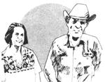

Reprinted by permission from High Country News, copyright © 1978
The following story originally appeared in High Country News, a fine biweekly environ. mental newspaper. Some of our readers may find Boyd Charter's language a bit on the strong side, but we figured that what the "Cantankerous Cowman" had to say was a whole lot more important than just how he chose to say it. (if this article whets your ap. petite for the kind of solid eco-information that High Country News is known for, you can order a year's subscription to the paper-for $12from High Country News, Box K, Lander, Wyoming 82520 ... and membership in author Kye Cochran's Alternative Energy Resources Organization -plus a year's subscription to the AERO Sun-Timescan be yours for only $10 per year from AERO, 435 Stapleton Building, Billings, Montana 50101.)
[EDITOR'S NOTE: Boyd Charter died August 26 at his ranch in the Bull Mountains of Montana. He and his wife, Anne, were longtime opponents of strip mining and founders of the Northern Plains Resource Council and of the Bull Mountain Landowners Association. The tribute to Charter whichfollows was written by Kye Cochran of the Alternative Energy Resources Organization.]
Boyd Charter had a straightforward value system. It went like this: You keep your word. You don't hurt other living things for sport or play or through meanness. You do what you can to help keep the earth and its inhabitants alive and happy.
In these times of people pushing "new and better" things to acquire and do, Boyd's values too often are equated with gullibility and stupidity, rather than the simplicity of truth.
When coal companies began sending representatives to eastern Montana in the early '70's to negotiate the buying-up of ranchers' land for strip mining of coal, they read Boyd wrong.
He used to tell of one encounter he and his wife Anne had with an acquisitive coal company representative who assumed that because Montana ranchers are hospitable to strangers, they are also ignorant and malleable.
"This fella didn't know that we had already sent some Montana ranchers down to Appalachia to find out from the people down there how the coal boys operated to weasel a person's land out from under him," Boyd said. "So we knew all their tricks. The Kentucky people told us how the company would send out a real slick talker, and he'd go about buttering up the poor unsuspecting landowner, being real friendly and telling him what a great place he had, and how his horses was so fantastic looking, why wasn't they on the race track, and how he'd never had such good coffee in his life, and did his wife really make these muffins, why, she ought to enter them in a contest and win a prize, and blah blah blah.
"Well," said Boyd, "when this fancy
coal boy drove up to our place, there just happened to be a small bunch of my buckin' horses down by the gate. Real scruffy-looking, but damn fine buckers. Seeing we had a visitor, Anne put on a pot of coffee, which has always tasted terrible at the ranch because our water comes out of a coal seam and has sulfur in it; and she brought out the remains of an old' cake she had put together in a hurry with a mix a week before.
"Well, this sweet-talking sonofabitch started right in: 'My,' he said, 'you surely do have a beautiful place here! Look at them horses: Why, they look like sure enough thoroughbreds ... they ought to be out at the race track in Denver!' and 'Gee whiz, Miz Charter, did you make this cake yourself? It ought to win a prize!' and 'If this ain't the best coffee I've ever tasted!'
"Just about that time," said Boyd, "I figured I'd had enough. I stood up. 'Listen to me,' I said. 'If you think them horses is beautiful, your eyes is lyin' . . . if you think this cake ain't stale and this coffee is any better'n goat pee, your taste buds is lyin' . . . and every time you open up, god, your mouth is lyin'! The door swings out the same way it swung in: Hit it, you lyin' sonofabitch! '
" The son of one of Butch Cassidy's Hole-in-the-Wall Gang, Boyd Charter was born in Baggs, Wyoming and spent much of his life as a cowboy and rancher, first in Jackson, Wyoming and later in the Bull Mountains of south central Montana. As a boy, Boyd used to creep downstairs at night and listen when members of the gang were gathered in the Charter living room. One tale he remembered concerned an elderly couple whom the gang paid to keep fresh getaway horses ready at their ranch. After a bank robbery or similar piece of action, the gang could count on being able to change mounts on the run if the getaway happened to be in the direction of that ranch.
One time they robbed a bank and headed for the old couple's place. When they arrived, they found the man and his wife very upset, and learned that the bank was about to foreclose on the ranch and turn them out.
"How much do you owe the bank?" asked Butch. "Three thousand dollars," answered the old man. "Okay, here's the three thousand," said Butch, counting it out. "Don't forget to get a receipt." The gang mounted the fresh horses and took off.
The next day, along came the bank man. The old rancher happily paid him, insisting upon getting a receipt. The bank man rode off with the money. A mile down the road, the gang jumped him and took possession of the useful $3,000.
Boyd took great pride in being trustworthy and expected the same of others. If someone betrayed his trust, he took immediate and direct action. When he was a cowboy near Jackson, he rode into town one day and stopped off at his favorite saloon.
"Hey Boyd," yelled one of his cronies at the bar, "you must be hard up these days. "
"What do you mean?" he asked.
"Rentin' your favorite horse to that movie company," his friend replied.
"You've been seeing things. That horse is summering in a pasture out east of town. "
"Hell it is! It's your horse all right, and what's more they're swimmin' him back and forth across the river.
" So Boyd hightailed it for the river, and sure enough, there was the movie star on his horse.Incensed, Boyd walked up to the man and said,"Git down off my horse."
"This is a horse we rented for this movie," said the man.
"Git down off my horse! " said Boyd.
The man protested again.
Boyd picked up a stone. "Git down off my horse, dammit, or I'll GIT you off my horse!
" The man got off.
Many years later Boyd got a letter from his cousin in Oklahoma. The cousin said that he had recently been introduced to John Wayne. When Wayne heard the cousin's name, he said, "Charter ... Charter ... you have any kin in Wyoming? " The man said, "I have a cousin Boyd
Charter who used to live in Wyoming." "Boyd Charter! " exclaimed Wayne. "That's the name. Meanest man in the West!
" But Boyd wasn't mean at all. Feisty, and quite often cantankerous, yes. Mean, no. You could tell by how gentle and trusting all his animals were. For a long time Boyd had a string of about 50 buckin' horses that were rented for use in rodeos. Boyd maintained that the best buckin' horses are those that simply like to buck, not those that buck through fear, anger, or meanness. Many of his buckin' horses were so tame and gentle that his kids could ride them bareback around the corrals.
Few people are so sure of exactly what they need for comfort and happiness that they cannot be tempted by the offer of money or power. Boyd was sure. He and Anne were comfortable and happy in their tiny log house. Their land was precious to them and important to their happiness. They didn't want any amount of money for it. They wanted it to remain healthy and unscarred.
The people from Consolidation Coal Company didn't understand that. They kept offering more and more money. Everybody has his price, they thought. Finally, they had a meeting with the Charters, and they handed them a blank check. Name your price, they said. Anything. Boyd was finally weary of all this persistence in the face of his often repeated"no".
"I know you are one of the largest coal companies in the world," he told them, "and I know you're a subsidiary of one of the largest and richest oil companies in the world. I know you're so rich you could pay me as much money as I could imagine and not notice it at all. But no matter how much money you offer me, you will always be four dollars and thirty-six cents short."
Boyd's instinct for truth and his strength and tenaciousness have been and continue to be a source of inspiration for the many Montanansand otherswho knew him. His spiritual leadership, even when illness kept him from active participation, has lent courage to those battling to save Montana's land and air from devastation. Because of Boyd and the example he set for others, more and more "slick sonofabitches"as he would call them-who offer false riches for the right to destroy true riches will find themselves four dollars and thirty-six cents short.*
|
 |
|
|